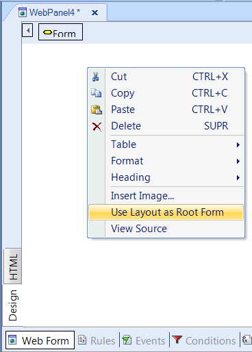

How to create an Abstract form from the beginning, when the model uses the HTML Editor by default? This is an option of the contextual menu in the Web Form of the HTML Editor. DescriptionAlthough by default the KB may use the HTML editor, the user can change the Root form of each web object to use the Web Abstract Editor. The steps to be followed are: 1. Create a new web object.  Since then, the Root Form for this object will use the abstract editor. See Also |
| Backlinks |
| Use HTML As Root Form |